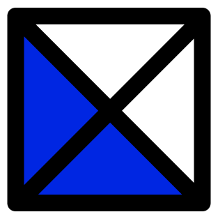
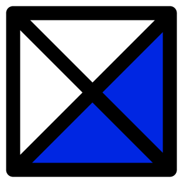
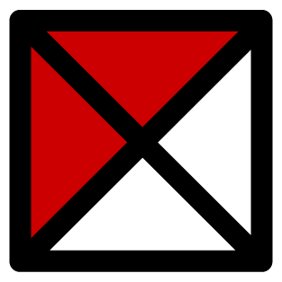

Choose Your Path
EXPLORE COMMON JUNGLE PATHS
Full Clear
Vertical
Full Clear
Vertical
CURRENT PATH'S WIN RATE
Frequently Asked Questions
What am I looking at?
You’re looking at a jungle pathing tool where you can select nodes to choose minute positions along the jungler’s path. Throughout the construction of your path, our predictive model looks at data from paths similar to yours to construct a position plot, position heat map, and win rate heat map.
How did you obtain this predictive model?
We looked through our data for similar paths to the path you constructed, and we displayed the next-minute data from the similar paths. With this next minute data, our predictive model is then able to calculate and assign probabilities to arbitrary regions of the map to create a positional heat map as well as calculate win ratios for arbitrary regions of the map to create a win rate heat map.
But really, how did you get these predictions?
Each time a point is selected on a path, our predictive model uses the chosen point to filter the data to only include jungle positions similar enough to the path you have constructed. In order for a specific path from the data to be considered similar to your path, each position along the path from our data must be within a range of 750 units (Caitlyn’s attack range is 650 units) of the corresponding minute positions along your path.
For example, if your path is at red buff at krugs at two minutes and the opposing blue buff at three minutes, then the predictive model will filter our data to only include paths that were 750 units within krugs at two minutes and the opposing blue buff at three minutes.
Why aren’t many junglers starting at red or blue buff?
The initial path locations displayed are the junglers’ positions at 2:00. So, with buffs spawning at 1:30, most champions have already cleared their first buff by approximately 1:45. By 2:00, most junglers are currently making progress or finishing up their second camp.
Where did you get the data?
We used the Riot API to gather match timeline data from the North American server on patches 9.1 and 9.2. Match timeline data provides positional data for all players in the game in minute intervals, and we filtered this match timeline data to specifically include high elo (diamond or better) junglers. In total, we have high elo jungle position data for approximately 91,000 paths for both blue and red side.
Why high elo data?
We chose to use high elo data because we felt there was more to learn from high elo gameplay, and, also, we felt that users would be more interested in examining data from high elo gameplay.
Why did you choose start at two-minute positions?
The first jungle camps spawn at 1:30, so jungler position at 1:00 isn’t necessarily indicative of a jungler’s intended starting camp. In fact, a fair number of junglers watch one of the jungle entrances for potential invades at one minute.
Why can I only click on certain places on the map?
When analyzing the timeline data, we found that there were specific regions on the map that were more concentrated with jungle position data than others. Typically, these locations were jungle camps. We chose to use a set of twenty positions on the map that were both rich with data and familiar to the user.
Why are my options continuously narrowed down as I progress through my path?
As you continue to add points to your path, our tool filters the data to only include junglers who went on a similar path as yours. If you choose a point on your path that few high elo junglers chose, then a large portion of the data will be filtered out, and you may or may not be able to continue from that point. Check out the example paths on the right-hand side of the tool to get an idea of some of the common and easier-to-interpret high elo jungle paths.
What tech did you use to make this?
Data from the Riot API was stored in a MySQL database, which we then extracted and processed in Python. The tool itself was coded with a JavaScript library called D3, and the code includes an algorithm for accessing the appropriate data from the data structures.
Why does the win rate Heatmap get washed out in low sample size regions?
As an example, think about a region where only two junglers passed through. If both junglers won their games, then the win rate of that region would be 100% and it would overwhelm the rest of colors on the map even though we don’t think we can draw meaningful conclusions from two data points. To combat this, we bumped the win rates of all regions to be closer to 50% than they actually were, but made it so this “shrinkage” towards 50% didn’t apply as much to large sample size regions. This way, the colors correspond to more realistic estimates of win rates in each region. For those of you who know a bit about Bayesian statistics, we used a Beta Binomial model. In essence, this method normalizes most low sample size regions to be around 50% without drastically impacting the win rates calculated in higher sample size regions.